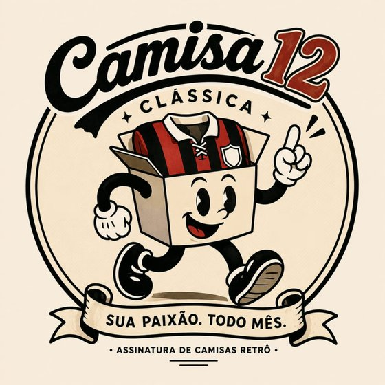

★ Clube de assinatura · futebol retrô
Olá,
CAMISA 12.
Sua paixão. Todo mês.
A paixão pelo futebol que atravessa gerações. Na CAMISA12, cada camisa conta uma história. Somos uma loja virtual criada para quem enxerga o futebol muito além dos 90 minutos — para colecionadores que valorizam a nostalgia, a identidade e os momentos que marcaram a história do esporte. Por meio do nosso clube de assinatura, você recebe periodicamente uma camisa de futebol retrô cuidadosamente selecionada, trazendo de volta grandes clubes, ídolos, temporadas inesquecíveis e clássicos que vivem na memória dos torcedores.
Vista a história. Colecione momentos.
